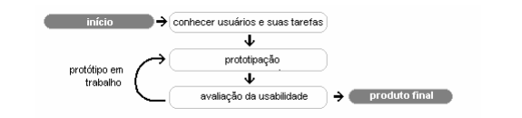

Ciclo de identificação de problemas • 10 DEZ '22
O ciclo de vida acima é uma representação simplificada. Outros autores propõem etapas intermediárias de design e especificação. Contudo, o processo cíclico apresentado aqui é suficiente para descrever o princípio. Deve-se considerar que, devido às frequentes atualizações necessárias à manutenção de um site Web, uma interface Web será sempre um protótipo avançado dentro do ciclo de vida de projeto acima. Assim, a cada modificação no site, deve-se considerar a sua avaliação para assegurar que a modificação não alterou a usabilidade do site.
Classificando os problemas por nível
Uma vez identificado um problema de usabilidade, o passo seguinte é procurar uma solução. O custo da solução de um problema pode ser apenas algumas linhas de código corrigidas em alguns minutos ou transformações profundas na estrutura do site, o que podem levar semanas.
O grau de severidade pode ser avaliado como relação ao impacto (grave, importante ou impacto menor) sobre a realização de tarefas e freqüência com o qual o problema ocorre. Embora outras escalas para avaliar severidade possam ser utilizadas, sugere-se a escala de severidade proposta por Woolrych e Cockton (2001). Assim, com relação ao impacto, os problemas podem ser classificados como:
- Grave: usuários precisam de mais de 2 minutos sem progresso na realização da tarefa. Usuários abandonam a tarefa ou demonstram stress na realização da mesma. Usuários não conluem a tarefa.
- Importante: usuários gastam até 2 minutos e obtem êxito na realização da tarefa. Usuários podem demonstrar stress visível ou perda de qualidade de interação.
- Impacto menor: usuários encontram o problema mas conseguem contornálo sem prejuízo importante para a qualidade de realização da tarefa.
A segunda dimensão para determinar severidade é a freqüência com que um problema ocorre. Assim temos:
- Grande freqüência: problemas ocorrem com mais de três usuários.
- Média freqüência: problemas ocorrem com dois ou três usuários.
- Baixa freqüência: problemas ocorrem com um usuário.
Escolhendo os participantes
Essa escala de freqüência considera que apenas 5 usuários participam da avaliação. Deve-se observar que ela deve ser ajustada para para um número maior ou menor de participantes. Deve-se salientar que a importância e a freqüência dos problemas de usabilidade varia em função da representatividade dos usuários participantes. Se todos os usuários tem um perfil muito próximo, provavelmente os mesmos problemas serão identificados por todos os participantes e darão uma grande importância a todos os problemas identificados, sejam eles graves ou não. Por outro lado, pode ocorrer que usuários diferentes encontrem problemas distintos que não se repetem com outros usuários, dando a falsa impressão de que não se trata de problemas graves. Para resolver tais questões, deve-se usar da experência em outras avaliações e bom senso.
Livro: avaliação de usabilidade de sites web - Marco Winkler